HOLLOW SHELL
2277
"Eden will always exist within the people. I do not know what
this means yet, but we look to the stars for answers."
- Gema Yanju
- Gema Yanju
Founded upon the principle that “Eden” was never a planet,
but a People, The Hollow Shell Faction has facilitated the
evacuation of millions of citizens. Hollow Shell believes
that Eden is a dead planet. They had not referred to it
by its original name since The Breach. Eden is no longer
their home. They have made every effort
to leave the planet behind. Efforts such as establishing
refugee agreements to get citizens off-planet to more
habitable environments and repairing and
reconstructing old colony ships.

77 · 8342562 · 071702 · 101916 · 44